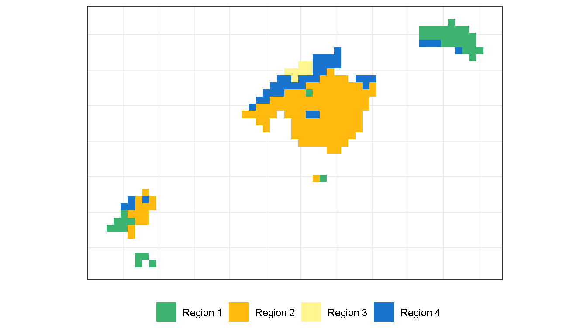

Circulation-To-Environment
Marc Lemus-Canovas
2020-03-23
circulation-to-environment.RmdThe synoptReg package contains two main methods to perform a synoptic classification based on the matrix mode. One of them is the S-mode.
Introduction to the S-mode classification method
The S-mode classification is that in which the grid points (lon-lat) are the variables and the observations (rows), the days. Thus, the application of a PCA on this type of matrix establishes the linear relationships between the time series of all the grid points. In this sense, the scores obtained in this type of classification show the degree of representativeness of each day for each of the principal components (PCs). However, the scores do not allow us to directly obtain the circulation types (also known as “weather types”), since the same day can be represented by different PCs. For example, 2018/01/23 may have a certain degree of representation in the PC1, PC3 and PC6. For this reason, we need to use the scores (degree of representation) as coordinates in the multivariate space to execute a clustering method that ends up creating groups between those days that are most similar to each other. In addition, the VARIMAX rotation is applied to the retained PCs in order to redistribute their explained variance. The variance of the PCs after being rotated will probably not follow a consecutive order. For example, the PC1 does not have to be the one that accumulates the highest explained variance. Note that this rotation is not applied in the pca_decision function.
In the synoptReg package the clustering method implemented is the one proposed by Esteban et al. (2005), based on the extreme scores. Esteban et al. suggest that the extreme scores (positive and negative) of each PC (>2 or <-2) can be used as the multivariate coordinates of each cluster center to apply the k-means algorithm. In this sense, when using the positive and negative scores, the groups in each component are split (if for each group these extreme scores are reached). So, if we retain 4 PCs, our final classification can have up to 8 weather types/circulation types.
Synoptic classification procedure
In this example we will use the data previously downloaded with the donwload_ncep function. Specifically, we will use the mslp and z500 objects loaded into the package, referring to the mean sea level pressure and 500 hPa geopotential height variables, respectively. The time period of the atmospheric variables is from 2000-01-01 to 2002-12-31. A total of 3 years.
library(synoptReg)
#>
#> ****
#> Welcome to synoptReg!
#> Using synoptReg for research publication? Please cite it!
#> I'm an early career researcher and every citation matters.
#> ****
# check ?download_ncep() to see how to download reanalysis data.
data(mslp)
data(z500)The first step before executing the synoptic classification is to pass the function tidy_nc, since it will allow us to join the two atmospheric variables to execute the classification later. It is also possible to subset the time period and the geographical extension. In addition, whether we specify an argument or not, this function computes the anomaly of each atmospheric variable. Such anomaly is computed with respect to the monthly average. If we subset the time period using the time_subet argument, the anomaly will be computed from this last period.
In any case, now we will only group our atmospheric variables. It is mandatory to use a list for grouping variables.
vars <- tidy_nc(x = list(mslp,z500), name_vars = c("mslp","z500"))
vars
#> # A tibble: 484,432 x 6
#> var lon lat time value anom_value
#> <chr> <dbl> <dbl> <date> <dbl> <dbl>
#> 1 mslp -10 60 2000-01-01 100010 -1908.
#> 2 mslp -7.5 60 2000-01-01 100292. -1625.
#> 3 mslp -5 60 2000-01-01 100508. -1410.
#> 4 mslp -2.5 60 2000-01-01 100675 -1243.
#> 5 mslp 0 60 2000-01-01 100810 -1108.
#> 6 mslp 2.5 60 2000-01-01 100915 -1003.
#> 7 mslp 5 60 2000-01-01 101000 -918.
#> 8 mslp 7.5 60 2000-01-01 101115 -803.
#> 9 mslp 10 60 2000-01-01 101260 -658.
#> 10 mslp 12.5 60 2000-01-01 101365 -553.
#> # ... with 484,422 more rowsOnce the two variables are joined in the same tibble, we can proceed to explore our data set to decide the number of components to retain. For such decision we will use the pca_decision function. It is important to specify a number of generous components since what we want is to know which number of components explain most of the variance in our data. Also, since we’re working with 2 variables that have different units of measurement, it’s important to normalize/standardize such variables.

After taking a look at the scree test, it seems reasonable to retain 4 PCs, which will be, probably, 8 WT. These 4 PCs explain 82% of the variance explained. Now, we can already compute the synoptic classification:
cl <- synoptclas(vars,ncomp = 4,norm = T,matrix_mode = "S-mode")
cl # list object containing the classification and the classified grid
#> $clas
#> # A tibble: 1,096 x 2
#> time WT
#> <date> <int>
#> 1 2000-01-01 4
#> 2 2000-01-02 4
#> 3 2000-01-03 4
#> 4 2000-01-04 4
#> 5 2000-01-05 4
#> 6 2000-01-06 4
#> 7 2000-01-07 4
#> 8 2000-01-08 4
#> 9 2000-01-09 4
#> 10 2000-01-10 6
#> # ... with 1,086 more rows
#>
#> $grid_clas
#> # A tibble: 3,094 x 8
#> var lon lat time WT mean_WT_value mean_WT_anom_va~
#> <chr> <dbl> <dbl> <date> <int> <dbl> <dbl>
#> 1 mslp -10 60 2000-01-01 4 99430. -2262.
#> 2 mslp -7.5 60 2000-01-01 4 99489. -2202.
#> 3 mslp -5 60 2000-01-01 4 99533. -2159.
#> 4 mslp -2.5 60 2000-01-01 4 99574. -2117.
#> 5 mslp 0 60 2000-01-01 4 99622. -2069.
#> 6 mslp 2.5 60 2000-01-01 4 99668. -2023.
#> 7 mslp 5 60 2000-01-01 4 99728. -1964.
#> 8 mslp 7.5 60 2000-01-01 4 99827. -1865.
#> 9 mslp 10 60 2000-01-01 4 99911. -1781.
#> 10 mslp 12.5 60 2000-01-01 4 99908. -1783.
#> # ... with 3,084 more rows, and 1 more variable: cv_WT_value <dbl>The object returned by synoptclas is a list that contains a tibble with each date and its corresponding WT, and another tibble that is a grid with the average value of the atmospheric variables for each CT. With this last result we can create a visualization of these synoptic patterns:
library(ggplot2)
library(dplyr)
#>
#> Attaching package: 'dplyr'
#> The following objects are masked from 'package:stats':
#>
#> filter, lag
#> The following objects are masked from 'package:base':
#>
#> intersect, setdiff, setequal, union
library(rnaturalearth)
library(metR)
borders <- ne_countries(continent = c("europe","africa"),
returnclass = "sf")
ggplot()+
geom_raster(filter(cl$grid_clas, var == "z500"),
mapping = aes(lon,lat,fill = mean_WT_anom_value),
interpolate = T,hjust = 0,vjust = 0)+
geom_sf(data = borders, fill = "transparent")+
geom_contour2(data = filter(cl$grid_clas,var == "mslp"),
aes(x=lon,y=lat,z=mean_WT_value/100),
binwidth = 4, color = "black") +
geom_text_contour(data= filter(cl$grid_clas, var == "mslp"),
aes(x=lon,y=lat,z=mean_WT_value/100),
stroke = 0.15,binwidth = 4) +
guides(fill = guide_colourbar(barwidth = 9, barheight = 0.5))+
facet_wrap(~WT, ncol = 4) +
scale_fill_divergent(name = "Z anomaly (m)") +
scale_x_continuous(limits = c(-10,30), expand = c(0, 0))+
scale_y_continuous(limits = c(30,60), expand = c(0,0))+
theme_bw() + theme(axis.title = element_blank(),
axis.text = element_blank(),
axis.ticks = element_blank(),
legend.position = "bottom")
#> Warning: Removed 203 rows containing missing values (geom_raster).
From circulation types to environment
synoptReg has a function that allows to estalblish the link between the synoptic classification created previously and its link with any environmental variable. In this case, the example uses daily precipitation data from the Balearic Islands (Spain) at a resolution of 5x5 km.
data(pcp)
pcp
#> # A tibble: 847,798 x 4
#> lon lat time value
#> <dbl> <dbl> <date> <int>
#> 1 865672 4313822 2000-01-01 0
#> 2 870672 4313822 2000-01-01 0
#> 3 870672 4318822 2000-01-01 0
#> 4 875672 4313822 2000-01-01 0
#> 5 875672 4318822 2000-01-01 0
#> 6 875672 4323822 2000-01-01 0
#> 7 875672 4328822 2000-01-01 0
#> 8 880672 4308822 2000-01-01 0
#> 9 880672 4313822 2000-01-01 0
#> 10 880672 4318822 2000-01-01 0
#> # ... with 847,788 more rowsAs you can observe, the structure of the tibble is always the same (variables: lon, lat, time, value) and has to be respected so that all the functions of the package work correctly. How do we calculate the interaction of WTs with precipitation?
ct2pcp <- ct2env(pcp,clas = cl$clas,fun = mean,out = "data.frame")
ct2pcp
#> # A tibble: 1,477 x 4
#> lon lat WT calc
#> <dbl> <dbl> <int> <dbl>
#> 1 865672 4313822 4 9.56
#> 2 870672 4313822 4 10.9
#> 3 870672 4318822 4 7.69
#> 4 875672 4313822 4 5.40
#> 5 875672 4318822 4 6.44
#> 6 875672 4323822 4 6.59
#> 7 875672 4328822 4 6.47
#> 8 880672 4308822 4 4.94
#> 9 880672 4313822 4 4.34
#> 10 880672 4318822 4 6.24
#> # ... with 1,467 more rowsThe result is a tible containing the variables lon, lat, WT and calc. This last column is the result of the average precipitation for each grid point and WT.
To visualize the result:
ggplot() +
geom_tile(data=ct2pcp, aes(x=lon, y=lat,fill=calc/10)) + # original was mm*10
scale_fill_gradientn(colours = rev(pals::linearl(100)),
name = "rainfall (mm)",na.value="transparent") +
coord_equal()+
scale_colour_gradient(guide = 'none') + facet_wrap(~WT, ncol = 4) +
guides(fill = guide_colourbar(barwidth = 9, barheight = 0.5))+
theme_bw() + theme(axis.title = element_blank(),
axis.text = element_blank(),
axis.ticks = element_blank(),
legend.position = "bottom")
Creating categorized regions. The last step.
Finally, it may be interesting to classify our environmental variables into different regions. Each one of these regions will have different characteristics based on the relation with the precipitation linked to each WT. To carry out such a categorization process, it is necessary that our object ct2pcp is in raster format:
ct2pcp_r <- ct2env(pcp,clas = cl$clas,fun = mean,out = "raster")
ct2pcp_r
#> class : RasterBrick
#> dimensions : 35, 53, 1855, 7 (nrow, ncol, ncell, nlayers)
#> resolution : 5000, 5000 (x, y)
#> extent : 863172, 1128172, 4286322, 4461322 (xmin, xmax, ymin, ymax)
#> crs : NA
#> source : memory
#> names : X1, X2, X3, X4, X5, X6, X7
#> min values : 3.4160000, 6.6419753, 9.0756303, 0.7777778, 19.1250000, 12.9274194, 5.1167513
#> max values : 24.72800, 40.75926, 76.12605, 11.71296, 83.11029, 99.19355, 24.47716Now it is a matter of extracting the main spatial patterns of precipitation linked to WTs. For this purpose, we will use the raster_pca function.

ct2pcp_r_pca$summary
#> Comp.1 Comp.2 Comp.3 Comp.4 Comp.5
#> sdev 2.1842584 0.9127571 0.78722607 0.59919306 0.42692431
#> prop.variance 0.6815693 0.1190179 0.08853213 0.05129033 0.02603777
#> cum.variance 0.6815693 0.8005872 0.88911933 0.94040966 0.96644743
#> Comp.6 Comp.7
#> sdev 0.4077780 0.261887570
#> prop.variance 0.0237547 0.009797871
#> cum.variance 0.9902021 1.000000000The first 4 PCs accumulate almost 95% of the variance of our original data. Thus, we will use these 4 PCs to run our regionalization by means of the K-means algorithm implemented in the regionalization function. For more details on how the regionalization is performed, please read Lemus-Canovas et al. (2019)
# Regionalization
ct2pcp_reg <- regionalization(ct2pcp_r_pca$rasterPCA[[1:4]],centers = 4)
precp_region_df <- raster::as.data.frame(ct2pcp_reg$regionalization,
xy = T)
# Visualization:
labels <- c("Region 1","Region 2",
"Region 3", "Region 4")
colours <- c("mediumseagreen","darkgoldenrod1",
"khaki1", "dodgerblue3")
ggplot() +
geom_tile(data=precp_region_df, aes(x=x, y=y,fill=layer)) +
scale_fill_gradientn(colours = colours,
guide = "legend", breaks = c(1,2,3,4),
na.value = alpha("white", alpha = 0.0),
labels = labels, name= "")+
theme_bw() +
coord_equal()+
theme(axis.text = element_blank(),axis.title = element_blank(),
legend.position = "bottom", axis.ticks = element_blank())
To be more accurate, we should execute an iterative process with the function regionalization to evaluate the clustering error using the metric pseudoMAE included in the outputs of this function.
Method references
Synoptic classification method:
- Esteban, P., Jones, P.D., Martín-Vide, J., Mases, M., 2005. Atmospheric circulation patterns related to heavy snowfall days in Andorra, Pyrenees. Int. J. Climatol. 25, 319–329. https://doi.org/10.1002/joc.1103
Clustering method using the precipitation patterns linked to the weather types:
Lemus-Canovas, M., Lopez-Bustins, J.A., Trapero, L., Martin-Vide, J., 2019. Combining circulation weather types and daily precipitation modelling to derive climatic precipitation regions in the Pyrenees. Atmos. Res. 220, 181–193. https://doi.org/10.1016/J.ATMOSRES.2019.01.018
Lemus-Canovas, M., Lopez-Bustins, J.A., Martin-Vide, J., Royé, D., 2019. synoptReg: An R package for computing a synoptic climate classification and a spatial regionalization of environmental data. Environ. Model. Softw. 118, 114–119. https://doi.org/10.1016/J.ENVSOFT.2019.04.006